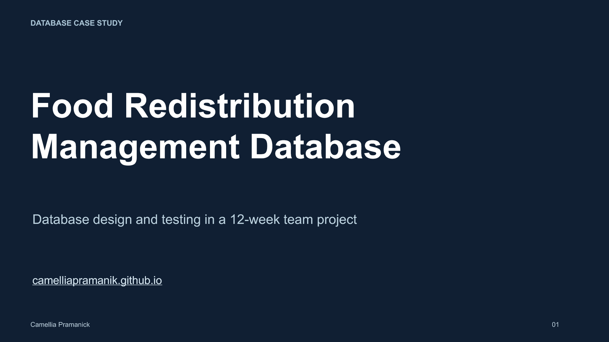
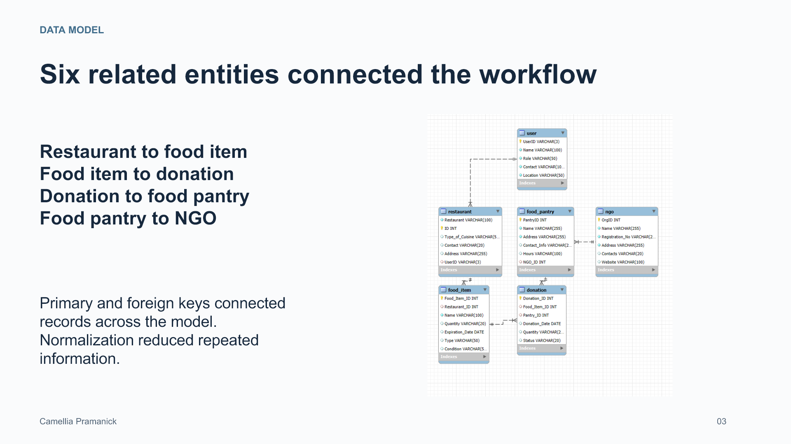
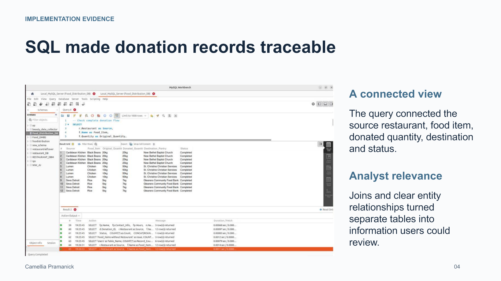
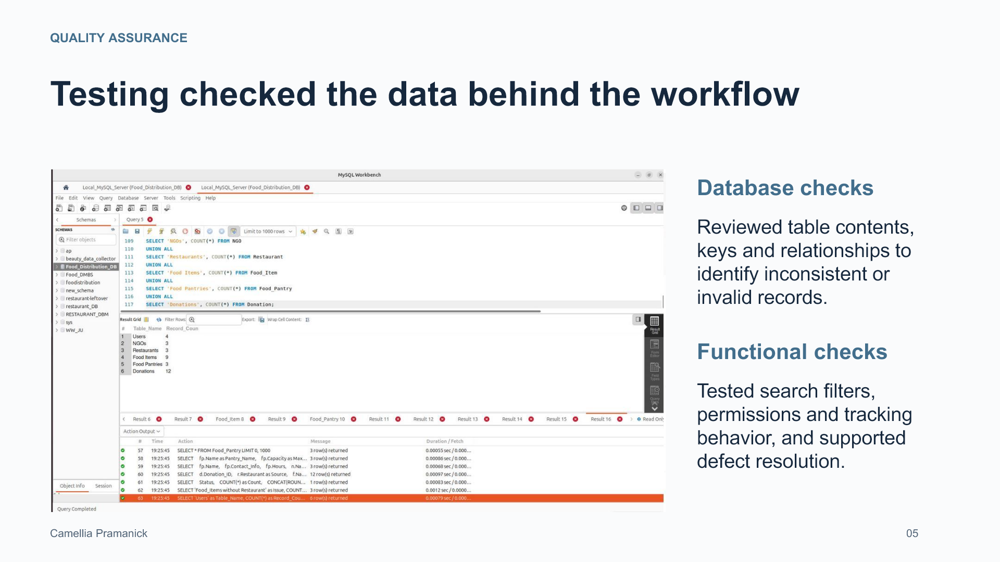

Food Redistribution Database
Academic team project. Original project diagrams and SQL evidence accompany my database design and testing contribution.

![PROBLEM AND CONTRIBUTION A database for coordinating surplus food Camellia Pramanick 02 The problem Restaurants, pantries and nonprofits needed a shared record of available food, destinations and donation status. My contribution Contributed to relational database design and testing, with attention to data integrity and dependable information retrieval. The team solution Linked users, restaurants, food items, pantries, NGOs and donations in a MySQL database. Why it mattered Made the flow of a donation traceable within the prototype, supporting inventory and donation reporting.](slide-02.png)



![REPORTING APPLICATIONS The model supported operational reporting Camellia Pramanick 06 Inventory availability Identify food by type, quantity and expiration date to support allocation and timely distribution. Donation tracking Connect food sources and destinations to review donation status and follow up on pending items. Donor and pantry activity Summarize contributions and pantry activity for coordination and project reporting. Data quality follow-up Use exceptions and relationship checks to flag incomplete records before reporting.](slide-06.png)
![CONTRIBUTION AND NEXT STEPS What the project demonstrated Camellia Pramanick 07 My contribution Combined database design with validation and functional testing as part of a four-person academic team. Skills demonstrated Relational modeling, MySQL, MySQL Workbench, Lucidchart, data validation and collaborative problem solving. Next improvement Store quantities as numeric values with explicit units, and enforce available-stock and expiration rules. Scope The deliverable was an academic prototype. Community impact and production performance were not measured.](slide-07.png)
Read slide text
Slide 1
DATABASE CASE STUDY Camellia Pramanick 01 Food Redistribution Management Database Database design and testing in a 12-week team project camelliapramanik.github.io
Slide 2
PROBLEM AND CONTRIBUTION A database for coordinating surplus food Camellia Pramanick 02 The problem Restaurants, pantries and nonprofits needed a shared record of available food, destinations and donation status. My contribution Contributed to relational database design and testing, with attention to data integrity and dependable information retrieval. The team solution Linked users, restaurants, food items, pantries, NGOs and donations in a MySQL database. Why it mattered Made the flow of a donation traceable within the prototype, supporting inventory and donation reporting.
Slide 3
DATA MODEL Six related entities connected the workflow Camellia Pramanick 03 Restaurant to food item Food item to donation Donation to food pantry Food pantry to NGO Primary and foreign keys connected records across the model. Normalization reduced repeated information.
Slide 4
IMPLEMENTATION EVIDENCE SQL made donation records traceable Camellia Pramanick 04 A connected view The query connected the source restaurant, food item, donated quantity, destination and status. Analyst relevance Joins and clear entity relationships turned separate tables into information users could review.
Slide 5
QUALITY ASSURANCE Testing checked the data behind the workflow Camellia Pramanick 05 Database checks Reviewed table contents, keys and relationships to identify inconsistent or invalid records. Functional checks Tested search filters, permissions and tracking behavior, and supported defect resolution.
Slide 6
REPORTING APPLICATIONS The model supported operational reporting Camellia Pramanick 06 Inventory availability Identify food by type, quantity and expiration date to support allocation and timely distribution. Donation tracking Connect food sources and destinations to review donation status and follow up on pending items. Donor and pantry activity Summarize contributions and pantry activity for coordination and project reporting. Data quality follow-up Use exceptions and relationship checks to flag incomplete records before reporting.
Slide 7
CONTRIBUTION AND NEXT STEPS What the project demonstrated Camellia Pramanick 07 My contribution Combined database design with validation and functional testing as part of a four-person academic team. Skills demonstrated Relational modeling, MySQL, MySQL Workbench, Lucidchart, data validation and collaborative problem solving. Next improvement Store quantities as numeric values with explicit units, and enforce available-stock and expiration rules. Scope The deliverable was an academic prototype. Community impact and production performance were not measured.